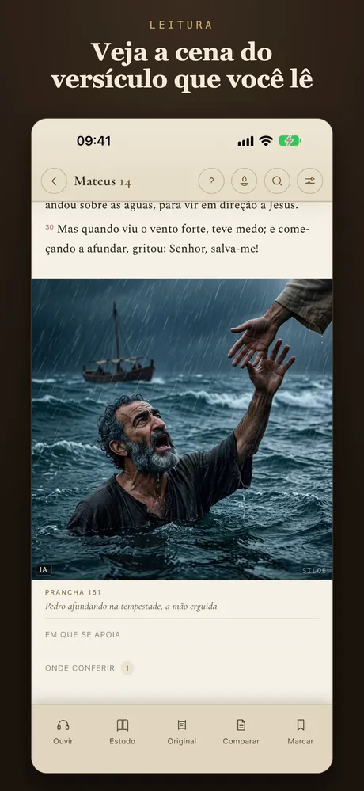
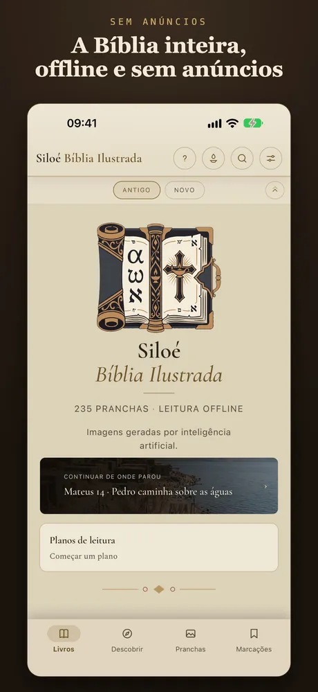
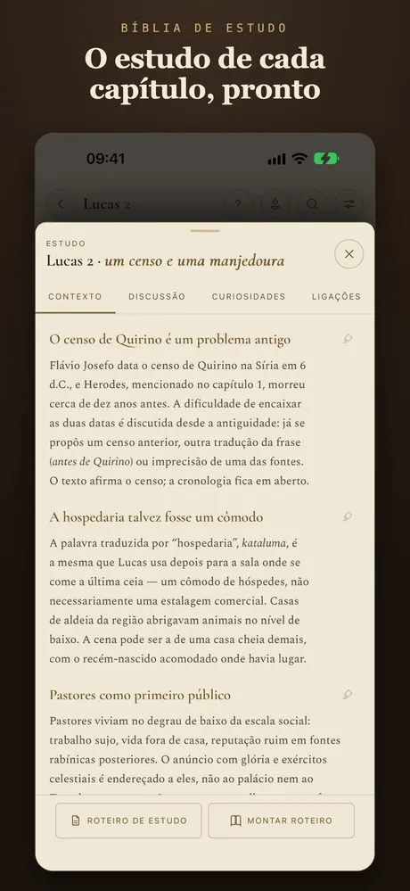
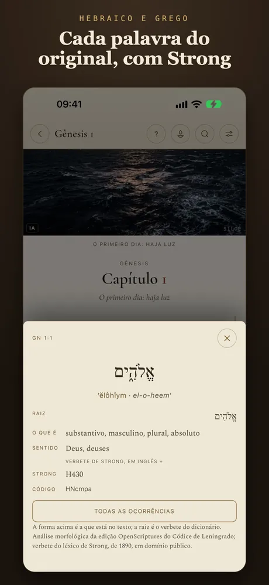
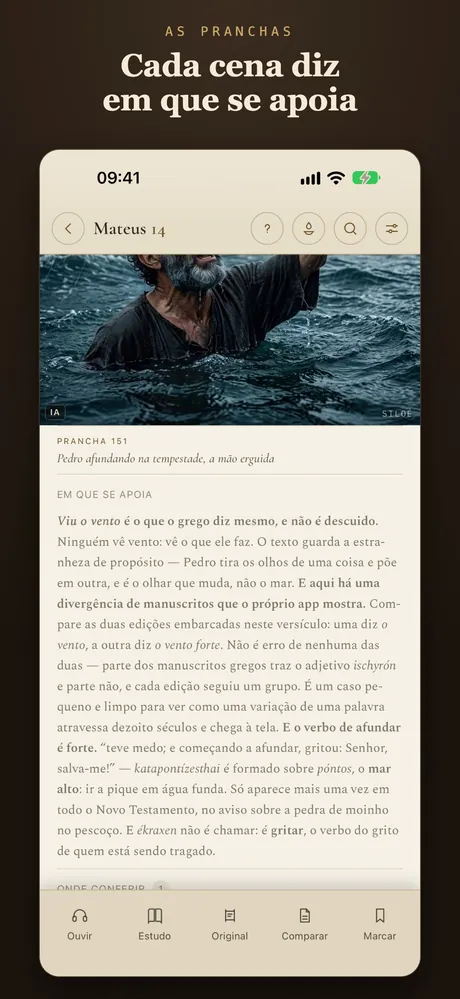
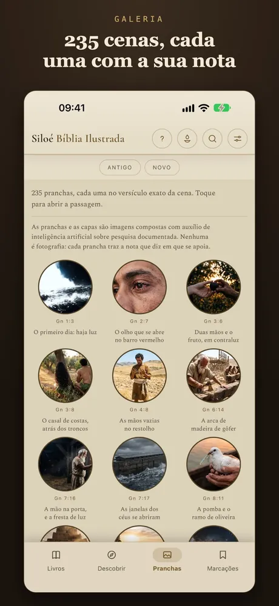
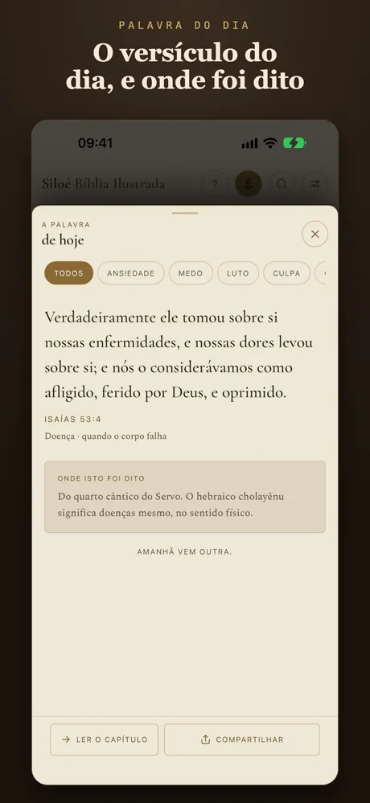
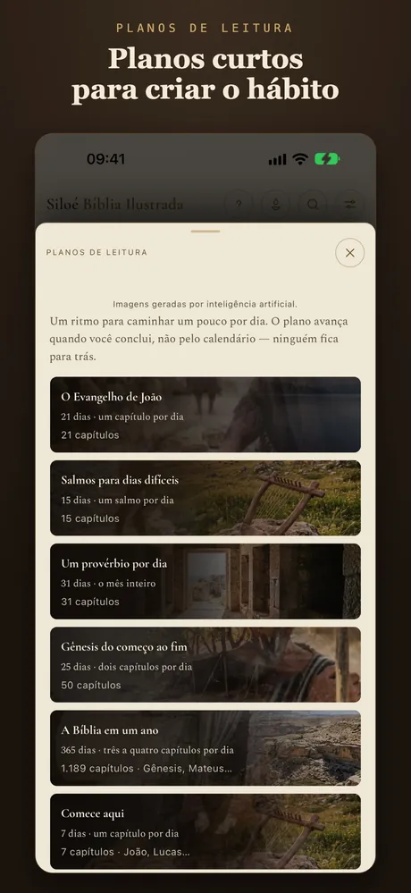

As pranchas
Veja a cena no versículo exato.
São 235 pranchas, e cada uma aparece no versículo da cena que retrata. Você lê Mateus 14 e vê Pedro afundando na tempestade, ali, junto do texto.

Bíblia Sagrada Ilustrada
A Bíblia completa em português, offline e sem anúncios, ilustrada com 235 pranchas, cada uma no versículo exato da cena.
Grátis para ler · edições extras em compra única, sem assinatura · em português, inglês, espanhol e francês


A Bíblia para ler, ver, ouvir e estudar — do primeiro versículo ao original hebraico e grego.
As pranchas
São 235 pranchas, e cada uma aparece no versículo da cena que retrata. Você lê Mateus 14 e vê Pedro afundando na tempestade, ali, junto do texto.
A nota de cada cena
Toda prancha traz uma nota com a base do desenho: o versículo, a escavação, o texto antigo. Onde a pesquisa não sustenta um detalhe, a nota diz isso também.
A galeria
Percorra a Bíblia pelas imagens, livro a livro, e pela galeria das personagens. Toque numa cena e o Siloé abre a passagem.

A Bíblia de estudo
Contexto histórico, perguntas para discussão, curiosidades e ligações com outras passagens, capítulo a capítulo. E um roteiro para o seu grupo ou célula, que você monta e leva em PDF.

Hebraico e grego
Como numa Bíblia interlinear: a leitura e o sentido de cada palavra, a raiz, a morfologia e o número de Strong. Na edição Pesquisador, a concordância mostra todas as ocorrências de cada palavra, livro por livro.
A tradução
O texto é a Bíblia Livre, tradução brasileira feita de textos em domínio público — a Almeida de 1819 e de 1911, o grego de Scrivener e de Nestle e o Códice de Leningrado —, nas formas tradicional e crítica.

Ouça a Bíblia
O Siloé lê o capítulo com a voz do seu celular e marca o versículo que está sendo lido. É narração sintética, não gravação de locutor — e funciona offline.

A Palavra do dia
A Palavra do dia vem com a nota que conta quem disse, onde e quando. Escolha por tema — ansiedade, medo, luto — e compartilhe num cartão.

Planos de leitura
Do «Comece aqui» à Bíblia em um ano, com lembrete diário. O Evangelho de João em 21 dias, Salmos para dias difíceis, um provérbio por dia.

No iPad
No iPad, as pranchas ganham espaço e a leitura fica confortável como num livro. Marcações, anotações e coleções em cinco cores, tudo guardado no seu aparelho.

A edição Gratuita não expira. Ilustrada, Completa e Pesquisador são compras únicas, sem assinatura: cada uma traz tudo o que a anterior tem, e quem sobe de edição paga só a diferença.
As telas do aplicativo, como aparecem na App Store.








As marcações, as anotações e o que você leu ficam no aparelho; nada vai para servidor nosso. O aplicativo não pede conta e não mostra anúncios.
Sim. A edição Gratuita traz a Bíblia inteira e não expira. Ilustrada, Completa e Pesquisador são compras únicas, sem assinatura; quem sobe de edição paga só a diferença.
Sim. No iPhone e no iPad o texto vem dentro do aplicativo. A internet só é usada quando você compra uma edição ou abre um link das notas.
A Bíblia Livre, tradução brasileira feita de textos em domínio público — Almeida de 1819 e de 1911, o grego de Scrivener e de Nestle e o Códice de Leningrado —, nas formas tradicional e crítica.
Não. O Siloé traz o cânon protestante; os deuterocanônicos e os acréscimos gregos de Ester e de Daniel não estão nesta edição.
Não. São imagens compostas com auxílio de inteligência artificial sobre pesquisa documentada, e cada uma traz a nota que diz em que se apoia. O texto bíblico não passa por inteligência artificial.
Outra dúvida? Escreva para contato@outcomeanalytics.com.br.
Baixe grátis e leve a Bíblia inteira no bolso.